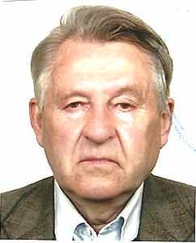
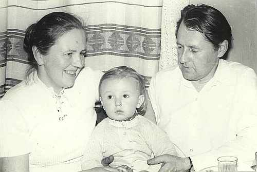

Цуприк Николай ЗиновьевичРодился 29.07.1942 в дер. Юхновичи на Слонимщине, Беларусь. Образование высшее: инженер-энергетик. Трудился в разное время в СПМК, УП Гроднооблпочта, Белтелекоме. В 1975г. поженились с Высоцкой Эльжбетой. |

 вместе с супругой Эльжбетой и сыном Владимиром |
|
Родители:
Братья/Сестры:
Дети:
|